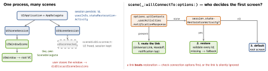

ios-platform · folio
In one line: Since iOS 13 one process drives many UI instances: each
window is a UIWindowScene with its own lifecycle, backed by a persistent
UISceneSession. The system may disconnect a background scene to
save memory and reconnect it later; restoration hands the scene back its own
NSUserActivity so it rebuilds UI state (ids, not model data) —
unless a deep link says where to go.
Download PDF Print view LaTeX source


Scenes and windows
- AppDelegate = process:
didFinishLaunching, push token, services,configurationForConnecting,didDiscardSceneSessions. SceneDelegate = one window:willConnectTo,sceneDidBecomeActive/WillResignActive/WillEnterForeground/DidEnterBackground,sceneDidDisconnect,openURLContexts,continue(links while running). With scenes, the app delegate’sapplicationDidBecomeActivefamily is not called. - Info.plist
UIApplicationSceneManifest:UIApplicationSupportsMultipleScenes = YESor the app stays single-window on iPad. Open a window withUIApplication.shared.requestScene SessionActivation(_:userActivity:options: errorHandler:):nilsession = new window; an existing one = bring it forward — prefer that to spawning duplicates. - Disconnect ≠ discard: disconnect frees a background scene’s UI (session kept, may reconnect via
willConnectTo); discard = the user closed it — clean up per-window data (may arrive at the next launch). keyWindow/windowsare ambiguous with several scenes: useview.window?.windowSceneorconnectedScenes.
iPad multitasking
- Split View, Slide Over, Stage Manager (iPadOS 16), freely resizable windows (iPadOS 26), external display: the system sizes your window, live. Adapt to size classes (
horizontalSizeClassis.compactin a narrow pane on the biggest iPad), never touserInterfaceIdiom. - React to traits:
registerForTraitChanges(iOS 17; replacestraitCollectionDidChange),viewWillTransition(to:with:);UISplitViewController/NavigationSplitViewcollapse to a stack in compact width. - Two windows share the process: a global “current document” breaks. Shared model at app level, per-window state in the scene.
Restoration + SwiftUI
userInfo= property-list values: ids, offsets, tab, draft text. OneNSUserActivitycan also drive Handoff (isEligibleForHandoff) and Spotlight.- Restores after a system kill. Discarded after the user closes the window / swipes the app away, or a crash during restore. Test: background the app, then Stop in Xcode, relaunch.
- Legacy:
restorationIdentifier+encodeRestorableState(with:), opt-inshouldSaveSecureApplicationState. - SwiftUI:
WindowGroup(multi-instance on iPadOS/macOS);@Environment(\.openWindow)→openWindow(id:)/openWindow(value:).@SceneStorage("k")= small per-scene values, restored automatically;@AppStorage= oneUserDefaultsfor all windows.scenePhaseis per scene (combined when read inApp).
Example — restore, but let links win
func scene(_ scene: UIScene,
willConnectTo session: UISceneSession,
options: UIScene.ConnectionOptions) {
guard let ws = scene as? UIWindowScene else { return }
window = UIWindow(windowScene: ws)
if let url = options.urlContexts.first?.url { router.open(url) }
else if let ua = options.userActivities.first {
router.continue(ua) } // UL / Handoff
else if let id = session.stateRestorationActivity?
.userInfo?["itemID"] as? String, store.exists(id) {
router.show(id) } // validated
window?.rootViewController = router.root
window?.makeKeyAndVisible() }
// asked on entering the background: keep it cheap
func stateRestorationActivity(for scene: UIScene)
-> NSUserActivity? {
let ua = NSUserActivity(activityType: "com.you.viewing")
ua.addUserInfoEntries(from: ["itemID": router.currentID])
return ua }Traps
- Archiving model objects into restoration — store ids and re-fetch; the record may be gone.
@AppStoragefor per-window UI state: two windows clobber each other.@StateObjectinsideWindowGroup= one per window.NavigationPathis notCodableitself — persistpath.codable(aCodableRepresentation) asData.
Remember
Session persists, scene comes and goes · link > restore > default · ids, not models.